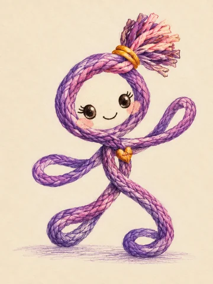
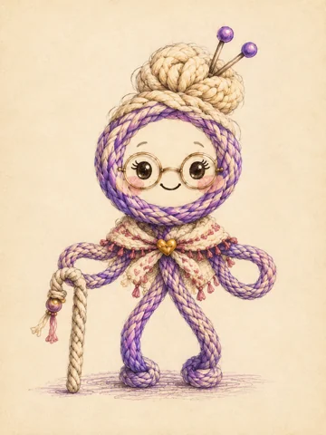
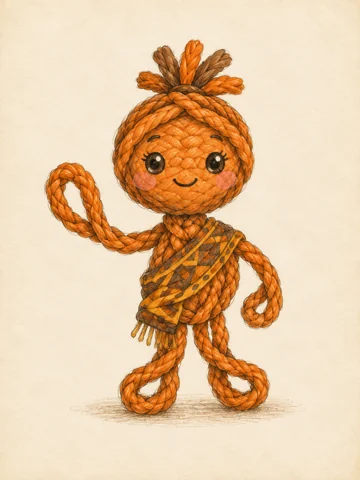
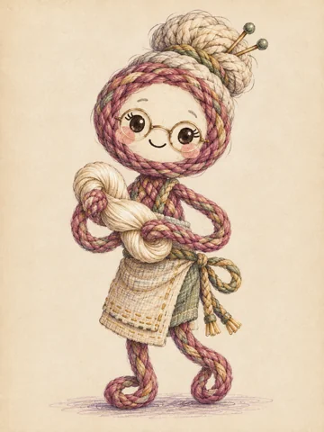
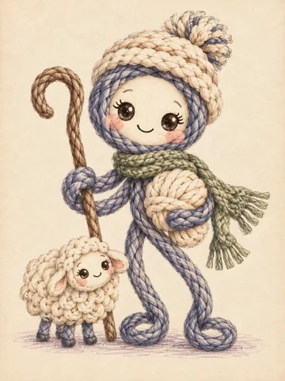
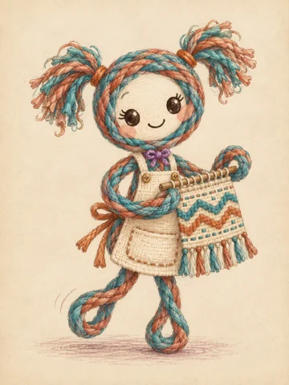
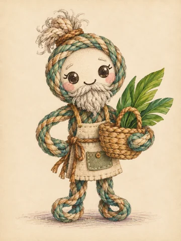
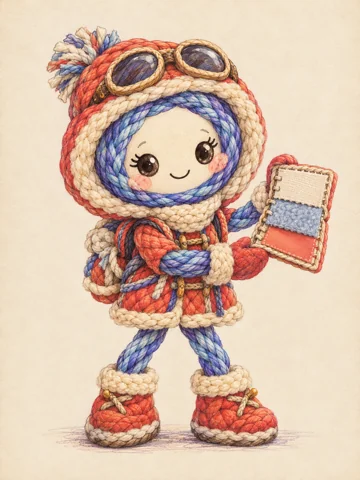

Escuchar una historia
Compartir el cuento, conocer a los personajes y conversar sobre las prendas y tejidos que usamos cada día.
Leer el cuento →Cuento · Taller · Videojuego
Un viaje con Luna para descubrir historias textiles, aprender jugando y crear algo con nuestras propias manos.
 Cada hilo puede guardar una historia.
Cada hilo puede guardar una historia.El taller que da origen al proyecto
Tejiendo Raíces Ancestrales se realizó para el Consulado de Colombia en diciembre de 2025. Ahora puedes ver sus materiales, su proceso y sus fotografías reales.
Ver el taller realizado →
La idea del taller
Luna sigue el hilo dorado que le entrega su abuela. En el camino descubre personas que trabajan con algodón, seda, lana y fibras vegetales. Después del viaje, llega nuestro turno de crear.
El hilo mágico de los continentes reúne el cuento, el taller infantil y una experiencia interactiva para explorar los textiles a través de la lectura, el juego y la creación. A partir del cuento existente, esta versión amplía la propuesta para futuros talleres y encuentros con los saberes textiles de Colombia.
Compartir el cuento, conocer a los personajes y conversar sobre las prendas y tejidos que usamos cada día.
Leer el cuento →Explorar seis paradas, reunir hilos en el pasaporte y encontrar parejas entre los amigos de Luna.
Entrar al videojuego →Inventar un patrón digital y entrelazar papel o hilos en cartón para construir una historia propia.
Preparar la actividad →Ocho personajes dibujados con la calidez del lápiz, la acuarela y las fibras trenzadas.

Luna
La abuela
El tejedor
La tejedora de seda
El pastor
La joven tejedora
El artesano de las fibras
NievesEl videojuego
Seis preguntas para conseguir hilos, cuatro parejas por descubrir y un taller digital para inventar patrones y dibujar.
Para quienes acompañan
Una secuencia de 60 minutos, tres propuestas por edad y materiales sencillos. En casa, en un aula o en un encuentro cultural.
No. El equipo acompañante muestra cómo pasar tiras o hilos por encima y por debajo. Cada participante puede empezar con papel y un soporte de cartón.
Sí, con una persona adulta que lea las historias y las opciones. Las parejas, los colores y la actividad manual permiten participar sin lectura autónoma.
La web necesita conexión para abrirse. El paquete descargable permite usar el cuento y el videojuego sin conexión en un ordenador. Descárgalo y pruébalo antes de la sesión.